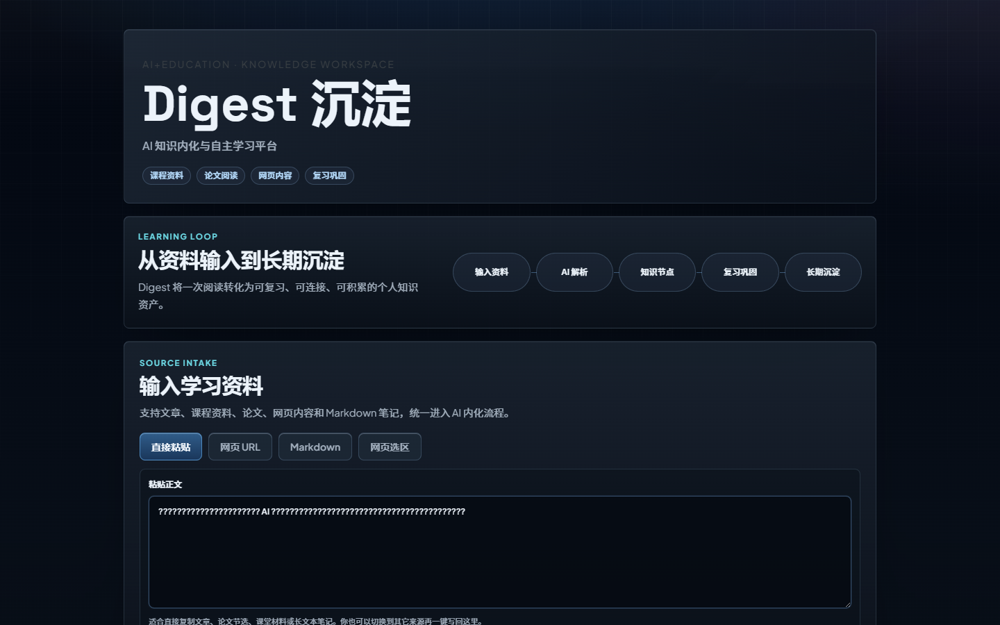
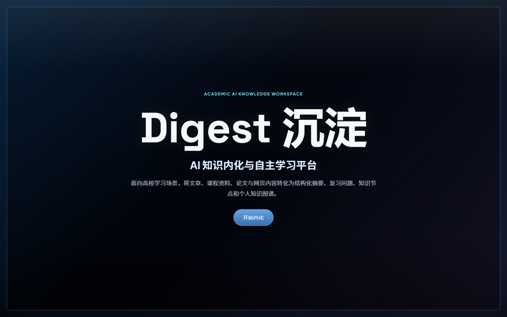

前因后果
收藏、截图、转发、保存，每天都在发生；理解、复习和输出，却很难自然发生。
AI SUMMARY
AI + EDUCATION KNOWLEDGE INTERNALIZATION
把看过的内容，变成真正属于你的知识。
1. 导入文章 / 笔记 / 链接
用户可以把文章、课程笔记、网页资料导入 Digest。
2. 提炼核心观点与关键概念
系统会自动提炼核心观点、关键概念和内容结构。

3. 生成可复习的知识卡片
内容会被整理成可以复习、检索和继续加工的知识卡片。

4. 沉淀为个人知识库
用户逐渐形成自己的知识库，而不是一堆散乱的收藏夹。
使用场景
整理课堂内容，形成复习材料
积累文献观点，搭建研究框架
从素材收集到选题输出
沉淀案例、资料和分析框架
商业化路径
表达为可验证的商业化路径和未来变现方向，不预设大规模盈利。
基础免费，高级功能付费
面向学生社群、课程小组、学习组织推广
提供知识库整理、课程资料沉淀和内容复用能力
AI-powered knowledge internalization tool